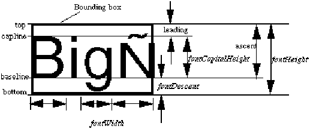

fixed ::= '(' 'fixed'
')'
cellPropertyOverride clusterPropertyOverride instancePropertyOverride portPropertyOverride propertyInheritanceControl propertyOverride viewPropertyOverride
Fixed is used to specify that a particular property value is fixed and may not be overridden. It is a semantic error to specify a property override for a property that is fixed.
It is a semantic error to use fixed in a context where a property may not be overridden, e.g. if it is notInherited or is already fixed.
(property BIN_NUMBER (string "A234") (propertyInheritanceControl (fixed)))
This specifies a property BIN_NUMBER which may not be overridden.
font ::= '(' 'font'
fontNameDef
typeface
fontProportions
{ <boldStyle> | <italicStyle> | property | <proportionalFont> |
userData }
')'
Font specifies information about the appearance of a text font used by the sending system. If the font defined in typeface is not installed on the receiving system, the information in font enables the EDIF reader to choose the most similar font from those available.
EDIF does not attempt to specify the method used by the reader to choose the most similar font.
DisplayAttributes and schematicRequiredDefaults specify not only which font to use for text, but also the height of the text (using textHeight). The font on the receiving system which is used to draw the text may need to be scaled to match the required textHeight. For example, if the required textHeight is 24 point and the installed font definition is at 12 point, scaling by a factor of two will have to be performed.
The information in font is also used for other purposes by verticalJustification.
The name of the font given by fontNameDef is used to reference the font within the EDIF data only.
FontProportions defines the fontHeight, fontDescent and fontCapitalHeight which together describe the height of the font as shown in the illustration below. The fontHeight and fontDescent values are measured from the font bounding box rather than from the top or bottom of a particular character. The ascent and fontDescent may include some space above the tops and/or below the bottoms of the characters as defined by the font designer so that the fontHeight defines the normal line spacing.

The font ascent, the distance between the baseline and the top of the font bounding box, is derived by subtracting fontDescent from the fontHeight value.
The leading is derived by subtracting fontCapitalHeight and fontDescent from fontHeight.
Not all these values may be readily available in a database being translated into EDIF. However, the EDIF writer must supply appropriate values for these measurements based on the appearance of the text on the source system.
The optional attributes boldStyle and italicStyle may be used to locate a particular typeface within a font family. See the description in typeface for more information.
ProportionalFont indicates that fontWidth is an average value and the actual character widths vary. Typically, the widths of capital letters are wider than the average and lower-case letters are narrower than the average.
(fontDefinitions
(fonts
(setDistance (unitRef decipoint))
(font f1
(typeface "Times"
(typefaceSuffix "-Bold-R-Normal"))
(fontProportions
(fontHeight 100)
(fontDescent 20)
(fontCapitalHeight 70)
(fontWidth 76))
(boldStyle)
(proportionalFont) ...)))
This example might have been created to represent a Times Bold 10 point font named f1. The unit decipoint in this example references a unit of one tenth of a point.
fontCapitalHeight ::= '(' 'fontCapitalHeight'
lengthValue
')'
FontCapitalHeight is the height of capital letters, as shown in the illustration under font.
(fontProportions (fontHeight 10) (fontDescent 2) (fontCapitalHeight 6) (fontWidth 1))
font textHeight fontHeight fontDescent
fontDefinitions ::= '(' 'fontDefinitions'
{ <fonts> }
')'
FontDefinitions collects together all the definitions of fonts at a given point in the EDIF data.
See font for an example.
displayAttributes font textHeight schematicRequiredDefaults
fontDescent ::= '(' 'fontDescent'
lengthValue
')'
FontDescent is a characteristic of the font. It is the distance between the baseline (refer to the diagram under font) and the bottom of the font bounding box. The font descent is the area in which the bottom parts of letters with descenders, e.g. "gjpqy", are drawn.
(fontProportions (fontHeight 10) (fontDescent 2) (fontCapitalHeight 6) (fontWidth 1))
fontCapitalHeight fontHeight fontWidth textHeight
fontFamily ::= stringToken
FontFamily defines a string name used to identify a family of typefaces. FontFamily is the name of the typeface without a suffix identifying bold, italic or other attributes. If no suffix is applicable, then the fontFamily is the same as the typeface name, and no suffix is provided.
boldStyle font italicStyle typefaceSuffix
fontHeight ::= '(' 'fontHeight'
lengthValue
')'
FontHeight is part of the information associated with a font definition specifying the height of the font bounding box. The height of text is defined as the distance between the top and bottom of the font bounding box, and is used as the line-to-line spacing. The font bounding box, defined by a font designer, includes whitespace above and possibly below the characters used in normal line spacing.
(fontProportions (fontHeight 10) (fontDescent 2) (fontCapitalHeight 6) (fontWidth 1))
This example shows a 10 point font, assuming that the applicable distance unit is one point.
fontCapitalHeight fontDescent fontWidth setDistance
fontNameDef ::= nameDef
FontNameDef is the definition of a font name. It is scoped to the EDIF file. The font name is used to reference the font within the EDIF file.
fontNameRef ::= nameRef
FontNameRef is a reference to a previously-defined fontNameDef.
fontProportions ::= '(' 'fontProportions'
fontHeight
fontDescent
fontCapitalHeight
fontWidth
')'
FontProportions specifies details of the space occupied by a particular font. See the description of font for an overview of the relationship between the various constructs.
(fontProportions (fontHeight 10) (fontDescent 2) (fontCapitalHeight 6) (fontWidth 1))
fontRef ::= '(' 'fontRef'
fontNameRef
')'
displayAttributes schematicRequiredDefaults
FontRef is used to reference a previously-defined font. The font reference is used to specify how text is to be rendered and positioned within the displayAttributes of a figureGroup or figureGroupOverride. If a fontRef is not defined in a figureGroup or figureGroupOverride, then the fontRef specified in schematicRequiredDefaults is assumed.
fonts ::= '(' 'fonts'
setDistance
{ font }
')'
Fonts specifies the unit of distance used in the definition of all fonts in the file and defines each font. The unit referenced by setDistance applies to all distance values for all font definitions.
See font for an example.
fontWidth ::= '(' 'fontWidth'
lengthValue
')'
FontWidth specifies the average width of the characters in a font. In a fixed-pitch font, this value forms a constant value for the character spacing, which is the change in the origin when rendering the characters in a text string. This value may be used to compute the width of the bounding box for text. For a proportional font, the widths of individual characters will vary, and the fontWidth will be the average spacing for all characters in the font. If a matching font cannot be located and the fontProportions attribute is specified in font, then the scaled widths from a known proportional font should be used to approximate the widths of text strings.
(fontProportions (fontHeight 10) (fontDescent 2) (fontCapitalHeight 6) (fontWidth 1))
forbiddenEvent ::= '(' 'forbiddenEvent'
timeInterval
{ event }
')'
ForbiddenEvent lists events which are forbidden during a period of time which is specified by timeInterval. ForbiddenEvent may be used to describe minimum required setup and hold times, minimum pulse widths, and other timing constraints.
(forbiddenEvent
(timeInterval
(event (portRef CLK) (becomes H))
(event (portRef CLK) (becomes L)))
(event (portRef D)))
In this example, no transitions can occur on port D during the time that port CLK becomes H to the time that port CLK becomes L.
(forbiddenEvent
(timeInterval
(event (portRef CK) (transition L H))
(duration (e 78 -1)))
(event (portRef CK) (becomes L)))
In the second example, for 7.8 time units after a L to H transition on port CK there must not be a transition back to L on the same port. This is equivalent to port CK having a minimum LHL pulse width of 7.8 time units.
forFrame ::= '(' 'forFrame'
frameNameDef
repetitionCount
forFrameIndex
logicalConnectivity
{ comment | documentation | <nameInformation> | property | userData }
')'
A forFrame is a frame whose contents are repeated a specified number of times during hierarchy expansion. RepetitionCount specifies the number of times to repeat the forFrame. Each repetition of frameNameDef is called an "element". ForFrameIndex specifies the index number given to each element created. The index number enables different annotation to be attached to each element. The index number can also be referred to in integerExpressions by using forFrameIndexRef.
(forFrame F1 (repetitionCount 32) (forFrameIndex J (indexStart 0) (indexStep 1)) (logicalConnectivity ...) )
In this example, 32 repetitions of F1 are created. They have the associated index values J = 0, 1, ...31.
connectivityFrameStructure forFrameAnnotate ifFrame otherwiseFrame schematicForFrameImplementation
forFrameAnnotate ::= '(' 'forFrameAnnotate'
extendForFrameMemberDef
{ comment | forFrameAnnotate | ifFrameAnnotate | interconnectAnnotate |
leafOccurrenceAnnotate | occurrenceAnnotate | otherwiseFrameAnnotate }
')'
forFrameAnnotate ifFrameAnnotate occurrenceAnnotate occurrenceHierarchyAnnotate otherwiseFrameAnnotate
This enables annotation to be attached to a specific element of an expanded forFrame.
(forFrameAnnotate (forFrameMemberRef F1 (indexValue 3)) ...)
Here, the element with index value 3 within F1 is to have annotation attached.
forFrameIndex ::= '(' 'forFrameIndex'
indexNameDef
{ <indexStart> | <indexStep> | <nameInformation> }
')'
This specifies the sequence of integer values to be used for the index of a forFrame expansion. IndexNameDef defines the name of the index.
The default value for the index start value is zero. The default value for the index step value is one.
(forFrame F1 (repetitionCount 32) (forFrameIndex I (indexStart 1) (indexStep 2)) (logicalConnectivity ...) )
In this example, the index starts from one and increases by two for each new element.
forFrameIndexDisplay ::= '(' 'forFrameIndexDisplay'
{ <indexEndDisplay> | <indexNameDisplay> | <indexStartDisplay> |
<indexStepDisplay> }
')'
schematicForFrameBorder schematicForFrameBorderTemplate
ForFrameIndexDisplay enables you to display the index name and other details of the index of a forFrame.
(forFrameIndexDisplay
(indexStartDisplay
(addDisplay
(display
(figureGroupOverride Green
(displayAttributes ...))
(transform (origin (pt 25 30))
(rotation 90))))))
In this example, only the index start is displayed.
forFrameIndexNameCaseSensitive ::= '(' 'forFrameIndexNameCaseSensitive'
booleanToken
')'
ForFrameIndexNameCaseSensitive defines whether or not the strings contained within nameInformation for a for frame index name are to be considered as case sensitive. The default is that names are case sensitive. Following normal precedence rules, this applies to the entire EDIF data if this form occurs in edifHeader, or to the entire library if it occurs in libraryHeader.
See clusterNameCaseSensitive for an example.
nameInformation clusterNameCaseSensitive
forFrameIndexRef ::= '(' 'forFrameIndexRef'
indexNameRef
')'
ForFrameIndexRef references a for frame index by name. It is used in integerExpression and returns the value of the for frame index referenced. It may only be used in the context of a for frame or its implementation.
(instanceNameGenerator
(stringConcatenate
(stringParameterRef instanceNameStem)
(decimalToString
(integerSum 1
(forFrameIndexRef J)))))
In this example, the name of the instance is created by concatenating the stringParameters instanceNameStem and the for frame index J, with 1 added and converted to a string.
forFrameMemberRef ::= '(' 'forFrameMemberRef'
frameNameRef
indexValue
')'
ForFrameMemberRef references a member of a forFrame. The indexValue must be valid in the context of the expanded forFrame. It is only possible to reference a member of a forFrame in the context of an expanded occurrence hierarchy, when the value of the forFrame repetitionCount and forFrameIndex are known.
(forFrame F1 (repetitionCount 4) (forFrameIndex INDEX1) ...) ... (forFrameMemberRef F1 (indexValue 0)) ... (forFrameMemberRef F1 (indexValue 1)) ... (forFrameMemberRef F1 (indexValue 2)) ... (forFrameMemberRef F1 (indexValue 3))
In this first example, the indexValues shown are the only valid ones.
(forFrame F1
(repetitionCount 4)
(forFrameIndex INDEX1
(indexStart 10) (indexStep 2)) ...)
...
(forFrameMemberRef F1 (indexValue 10))
...
(forFrameMemberRef F1 (indexValue 12))
...
(forFrameMemberRef F1 (indexValue 14))
...
(forFrameMemberRef F1 (indexValue 16))
In this second example, the indexValues shown are the only valid ones.
forFrameRef ::= '(' 'forFrameRef'
frameNameRef
')'
schematicForFrameImplementation
ForFrameRef references a forFrame.
(schematicForFrameImplementation FF1_IMP (forFrameRef FF1_LOGICAL) ...)
frameConfiguration ::= '(' 'frameConfiguration'
frameNameRef
{ frameConfiguration | instanceConfiguration }
')'
clusterConfiguration frameConfiguration
FrameConfiguration identifies a frame and specifies the configuration of the instances within the frame.
Each repetition of the same instance within a for frame will have the same configuration (when the for frame is expanded).
Nested frameConfigurations refer to nested frames.
(frameConfiguration FOR1 (instanceConfiguration INST1 ...) ...)
forFrame ifFrame otherwiseFrame
frameNameCaseSensitive ::= '(' 'frameNameCaseSensitive'
booleanToken
')'
FrameNameCaseSensitive defines whether or not the strings contained within nameInformation for a frame name are to be considered as case sensitive. The default is that names are case sensitive. Following normal precedence rules, this applies to the entire EDIF data if this form occurs in edifHeader, or to the entire library if it occurs in libraryHeader.
See clusterNameCaseSensitive for an example.
nameInformation clusterNameCaseSensitive
frameNameDef ::= nameDef
forFrame ifFrame otherwiseFrame
Specifies the name of a forFrame, ifFrame or otherwiseFrame.
frameNameRef ::= nameRef
extendFrameDef forFrameMemberRef forFrameRef frameConfiguration frameRef ifFrameRef otherwiseFrameRef
FrameNameRef is a reference to a frameNameDef.
frameRef ::= '(' 'frameRef'
frameNameRef
')'
FrameRef references an ifFrame, forFrame or otherwiseFrame.
(connectivityFrameStructure FRAME1 (frameRef FRAME1_LOGICAL) (connectivityNet NET1 ...) (connectivityBus BUS1 ...) ...)
frequencyValue ::= miNoMaxValue
schematicPortAcPowerRecommendedFrequency
FrequencyValue is a frequency value in units specified by setFrequency.
fromBottom ::= '(' 'fromBottom'
')'
A hotspot may prefer connections to be made to it from one or more specific directions. FromBottom specifies that a preferred direction is from the bottom of the hotspot.
(hotspotConnectDirection (fromBottom) (fromRight))
fromInteger ::= integerToken
FromInteger specifies the beginning of a sequence of integers.
(sequence 7 2 (step 1))
Here, the sequence starts at 7, the value specified by fromInteger.
fromLeft ::= '(' 'fromLeft'
')'
A hotspot may prefer connections to be made to it from one or more specific directions. FromLeft specifies that a preferred direction is from the left of the hotspot.
(hotspotConnectDirection (fromLeft) )